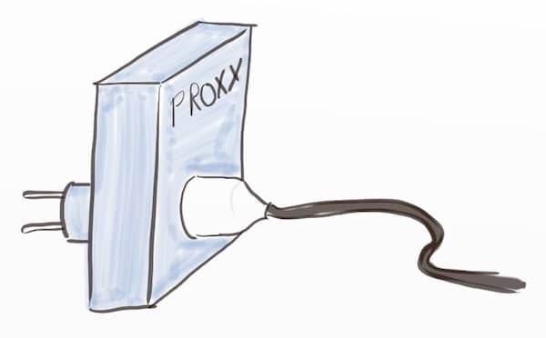

In the previous 7 articles of this series, I’ve tried my best get rid of mocks. I’m pretty sure that using these techniques will get you a long way out of mock hell. Excessive mocking leads to unmaintainable tests. Unmaintainable tests lead to low coverage. Low coverage ultimately leads to legacy code. If you haven’t already, I encourage you to start reading from the beginning.
One question remains though : Is it realistic to get rid of all mocks ? An even better question would be : Are mocks always bad ? Are there situations when mocking is the best choice ?
When mocking still makes sense
Let’s to through a few examples.
Testing a generic wrapper
A few years ago, I had to write a service for an enterprise system. As any service, I had to ensure that it was returning nice errors. We decided to capture and wrap all errors from a few ‘gate’ points in the code. We built a generic wrapper that did only delegation plus exception wrapping. In this case, it made a lot more sense to test this with a mocking framework.
1 2 3 4 5 6 7 8 9 10 11 | |
Not only did we reuse the wrapper many times in my service. We also ended up using it in other services as well !
Injecting a hand written in-memory fake
As you might have noticed, in the previous article, I recommended to use an in-memory fake instead of mocks. By nature, an in-memory fake is a kind of mock. Even if it is not defined by a mocking framework. (I actually think that by making mocking so easy, mocking frameworks often do more harm than good.)
💡 By making mocking so easy, mocking frameworks often do more harm than good.
Still, I used const_stub(...) to inject the in-memory fake.
1 2 3 4 5 | |
I did this for 2 reasons :
- Production code can continue to use a straightforward constant
- I don’t risk forgetting to remove the mock at the end of its lifecycle, the framework does this for me
- As I’m injecting the same fake for all tests, there is not much risk of test conflict (for the moment)
Testing a cache
The “raison d’être” of a cache is to avoid doing something twice. It should also return the same results as if it was not there. This is by nature almost impossible to test with state based assertions. Mock frameworks are great for this situation though. Here is an example :
1 2 3 4 5 6 7 8 | |
The assertion could not be more explicit, we are checking that the expensive load was only done once.
Legacy code
In Working Effectively with Legacy Code Michael Feathers explains how to exploit “seams” in the code to put it under test. Mocking is straightforward way to inject behavior through a seam.
Mocking is a pretty good starting point but we need to be careful and keep a few things in mind. Legacy or not, we must not forget that too many mocks will make tests unmaintainable !
- It’s a good idea to refer to a target design or architecture blueprint to know where to inject mocks. (I’ll write a post about this one day). This increases the chances to replace them with an in-memory fake later down the road.
- Plan to replace the mocks with a better design as soon as possible.
It depends …
As with anything in software, there is no absolute rule about mocking. Even if I prefer not to 99% of the time, there are situation when testing using mocks is the thing to do. Knowing the risks, it’s up to you to decide !
If using a mock, prefer spy / proxies

As I explained in previous posts, mocks duplicate behavior. If we could use mocks without duplicating behavior, they would do less harm.
It turns out there is a flavor of mocks for that : spies and overlooked proxies. Proxies do the real thing but also record the calls and return values. It’s as non-intrusive as mocks can be.
💡 Proxy mocks are as unintrusive as mocks can be.
For example, here is how our cache test would look like using a proxy :
1 2 3 4 5 6 7 8 9 10 | |
It’s more verbose, but simpler. Most mock frameworks provide some form of spy or proxies. A few years ago, I also wrote rspecproxies, a wrapper on top of rspec to make this easier.
This is the end
This was the 8th and last post in a series about how to avoid mocks. Before closing here is a list of other references about the topic.
- In the RailsConf 2014 keynote, DHH explains how mocking made their test harness unreliable.
- Is TDD dead is a well known online discussion about the Classic vs Mockist TDD approach
- Have a look at what Uncle Bob says about When To Mock
- For JS expert Eric Elliott, Mocking is a Code Smell
- In this talk Testable Architecture talk, Aslak Hellesøy explains how to build a full architecture for fast tests
- James Shore recently published a full pattern language entitled Testing Without Mock